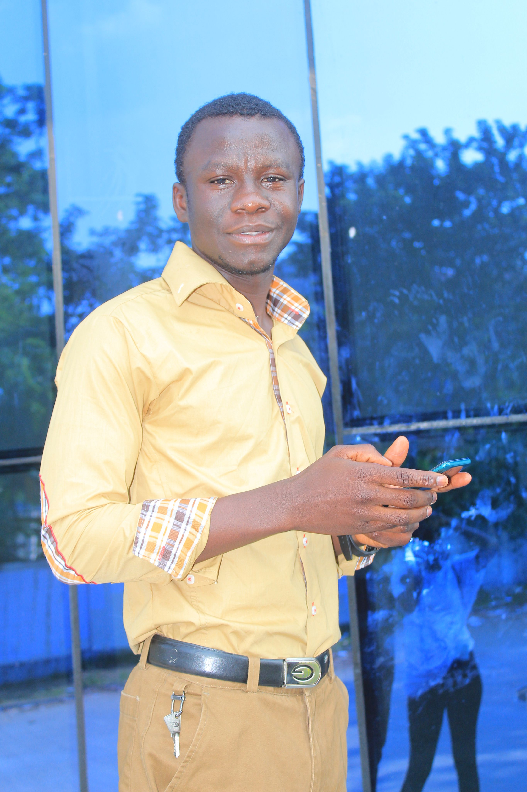

Aristid Wilbrech ELENGA-ASSEKA | WDD

Hi everyone!
I am Aristid Wilbrech ELENGA-ASSEKA one of BYU students, I am from Congo Brazzaville I'm learning Web programer at BYU Idaho and I am an English and Italian learner.I like traveling around the word, reading, working, and the computer science. I love my familly so much and I am a computer science learner. My passion is to be creative to like shat i'm doing not for the the the money but for the love that i have for what i'm doing. And the computer science have been one of my passion when i was at premery school and now i am doing Web programming one of my passion and i'm learningg English as usuel.